1. Background Over the past fifty years nuclear magnetic resonance spectroscopy, commonly referred to as nmr, has become the preeminent technique for determining the structure of organic compounds. Of all the spectroscopic methods, it is the only one for which a complete analysis and interpretation of the entire spectrum is normally expected. Although larger amounts of sample are needed than for mass spectroscopy, nmr is non-destructive, and with modern instruments good data may be obtained from samples weighing less than a milligram. To be successful in using nmr as an analytical tool, it is necessary to understand the physical principles on which the methods are based.
The nuclei of many elemental isotopes have a characteristic spin (I). Some nuclei have integral spins (e.g. I = 1, 2, 3 ....), some have fractional spins (e.g. I = 1/2, 3/2, 5/2 ....), and a few have no spin, I = 0 (e.g. 12C, 16O, 32S, ....). Isotopes of particular interest and use to organic chemists are 1H, 13C, 19F and 31P, all of which have I = 1/2. Since the analysis of this spin state is fairly straightforward, our discussion of nmr will be limited to these and other I = 1/2 nuclei.
The following features lead to the nmr phenomenon:
1. A spinning charge generates a magnetic field, as shown by the animation on the right. The resulting spin-magnet has a magnetic moment (μ) proportional to the spin.
2. In the presence of an external magnetic field (B0), two spin states exist, +1/2 and -1/2. The magnetic moment of the lower energy +1/2 state is aligned with the external field, but that of the higher energy -1/2 spin state is opposed to the external field. Note that the arrow representing the external field points North.
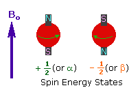
3. The difference in energy between the two spin states is dependent on the external magnetic field strength, and is always very small. The following diagram illustrates that the two spin states have the same energy when the external field is zero, but diverge as the field increases. At a field equal to Bx a formula for the energy difference is given (remember I = 1/2 and μ is the magnetic moment of the nucleus in the field).
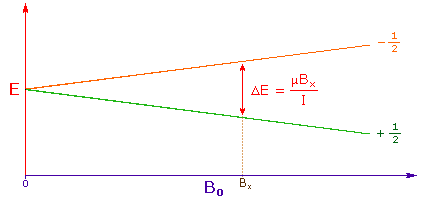
Strong magnetic fields are necessary for nmr spectroscopy. The international unit for magnetic flux is the tesla (T). The earth's magnetic field is not constant, but is approximately 10-4 T at ground level. Modern nmr spectrometers use powerful magnets having fields of 1 to 20 T. Even with these high fields, the energy difference between the two spin states is less than 0.1 cal/mole. To put this in perspective, recall that infrared transitions involve 1 to 10 kcal/mole and electronic transitions are nearly 100 time greater. For nmr purposes, this small energy difference (ΔE) is usually given as a frequency in units of MHz (106 Hz), ranging from 20 to 900 Mz, depending on the magnetic field strength and the specific nucleus being studied. Irradiation of a sample with radio frequency (rf) energy corresponding exactly to the spin state separation of a specific set of nuclei will cause excitation of those nuclei in the +1/2 state to the higher -1/2 spin state. Note that this electromagnetic radiation falls in the radio and television broadcast spectrum. Nmr spectroscopy is therefore the energetically mildest probe used to examine the structure of molecules. The nucleus of a hydrogen atom (the proton) has a magnetic moment μ = 2.7927, and has been studied more than any other nucleus. The previous diagram may be changed to display energy differences for the proton spin states (as frequencies) by mouse clicking anywhere within it.
4. For spin 1/2 nuclei the energy difference between the two spin states at a given magnetic field strength will be proportional to their magnetic moments. For the four common nuclei noted above, the magnetic moments are: 1H μ = 2.7927, 19F μ = 2.6273, 31P μ = 1.1305 & 13C μ = 0.7022. These moments are in nuclear magnetons, which are 5.05078•10-27 JT-1. The following diagram gives the approximate frequencies that correspond to the spin state energy separations for each of these nuclei in an external magnetic field of 2.35 T. The formula in the colored box shows the direct correlation of frequency (energy difference) with magnetic moment (h = Planck's constant = 6.626069•10-34 Js).
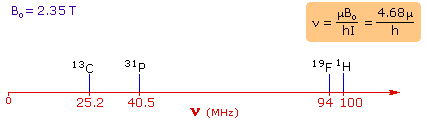
2. Proton NMR Spectroscopy This important and well-established application of nuclear magnetic resonance will serve to illustrate some of the novel aspects of this method. To begin with, the nmr spectrometer must be tuned to a specific nucleus, in this case the proton. The actual procedure for obtaining the spectrum varies, but the simplest is referred to as the continuous wave (CW) method. A typical CW-spectrometer is shown in the following diagram. A solution of the sample in a uniform 5 mm glass tube is oriented between the poles of a powerful magnet, and is spun to average any magnetic field variations, as well as tube imperfections. Radio frequency radiation of appropriate energy is broadcast into the sample from an antenna coil (colored red). A receiver coil surrounds the sample tube, and emission of absorbed rf energy is monitored by dedicated electronic devices and a computer. An nmr spectrum is acquired by varying or sweeping the magnetic field over a small range while observing the rf signal from the sample. An equally effective technique is to vary the frequency of the rf radiation while holding the external field constant.
For a description of the pulse Fourier transform technique, preferred by most spectroscopists over the older CW method, Click Here.
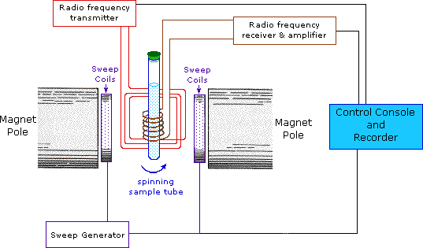
As an example, consider a sample of water in a 2.3487 T external magnetic field, irradiated by 100 MHz radiation. If the magnetic field is smoothly increased to 2.3488 T, the hydrogen nuclei of the water molecules will at some point absorb rf energy and a resonance signal will appear. An animation showing this may be activated by clicking the Show Field Sweep button. The field sweep will be repeated three times, and the resulting resonance trace is colored red. For visibility, the water proton signal displayed in the animation is much broader than it would be in an actual experiment.
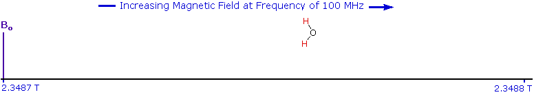
Since protons all have the same magnetic moment, we might expect all hydrogen atoms to give resonance signals at the same field / frequency values. Fortunately for chemistry applications, this is not true. By clicking the Show Different Protons button under the diagram, a number of representative proton signals will be displayed over the same magnetic field range. It is not possible, of course, to examine isolated protons in the spectrometer described above; but from independent measurement and calculation it has been determined that a naked proton would resonate at a lower field strength than the nuclei of covalently bonded hydrogens. With the exception of water, chloroform and sulfuric acid, which are examined as liquids, all the other compounds are measured as gases.
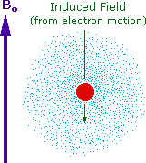
Why should the proton nuclei in different compounds behave differently in the nmr experiment ? The answer to this question lies with the electron(s) surrounding the proton in covalent compounds and ions. Since electrons are charged particles, they move in response to the external magnetic field (Bo) so as to generate a secondary field that opposes the much stronger applied field. This secondary field shields the nucleus from the applied field, so Bo must be increased in order to achieve resonance (absorption of rf energy). As illustrated in the drawing on the right, Bo must be increased to compensate for the induced shielding field. In the upper diagram, those compounds that give resonance signals at the higher field side of the diagram (CH4, HCl, HBr and HI) have proton nuclei that are more shielded than those on the lower field (left) side of the diagram. The magnetic field range displayed in the above diagram is very small compared with the actual field strength (only about 0.0042%). It is customary to refer to small increments such as this in units of parts per million (ppm). The difference between 2.3487 T and 2.3488 T is therefore about 42 ppm. Instead of designating a range of nmr signals in terms of magnetic field differences (as above), it is more common to use a frequency scale, even though the spectrometer may operate by sweeping the magnetic field. Using this terminology, we would find that at 2.34 T the proton signals shown above extend over a 4,200 Hz range (for a 100 MHz rf frequency, 42 ppm is 4,200 Hz). Most organic compounds exhibit proton resonances that fall within a 12 ppm range (the shaded area), and it is therefore necessary to use very sensitive and precise spectrometers to resolve structurally distinct sets of hydrogen atoms within this narrow range. In this respect it might be noted that the detection of a part-per-million difference is equivalent to detecting a 1 millimeter difference in distances of 1 kilometer.
Unlike infrared and uv-visible spectroscopy, where absorption peaks are uniquely located by a frequency or wavelength, the location of different nmr resonance signals is dependent on both the external magnetic field strength and the rf frequency. Since no two magnets will have exactly the same field, resonance frequencies will vary accordingly and an alternative method for characterizing and specifying the location of nmr signals is needed. This problem is illustrated by the eleven different compounds shown in the following diagram. Although the eleven resonance signals are distinct and well separated, an unambiguous numerical locator cannot be directly assigned to each.
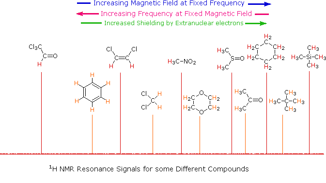
One method of solving this problem is to report the location of an nmr signal in a spectrum relative to a reference signal from a standard compound added to the sample. Such a reference standard should be chemically unreactive, and easily removed from the sample after the measurement. Also, it should give a single sharp nmr signal that does not interfere with the resonances normally observed for organic compounds. Tetramethylsilane, (CH3)4Si, usually referred to as TMS, meets all these characteristics, and has become the reference compound of choice for proton and carbon nmr. Since the separation (or dispersion) of nmr signals is magnetic field dependent, one additional step must be taken in order to provide an unambiguous location unit. This is illustrated for the acetone, methylene chloride and benzene signals by clicking on the previous diagram. To correct these frequency differences for their field dependence, we divide them by the spectrometer frequency (100 or 500 MHz in the example), as shown in a new display by again clicking on the diagram. The resulting number would be very small, since we are dividing Hz by MHz, so it is multiplied by a million, as shown by the formula in the blue shaded box. Note that νref is the resonant frequency of the reference signal and νsamp is the frequency of the sample signal. This operation gives a locator number called the Chemical Shift, having units of parts-per-million (ppm), and designated by the symbol δ Chemical shifts for all the compounds in the original display will be presented by a third click on the diagram.
The compounds referred to above share two common characteristics:
• The hydrogen atoms in a given molecule are all structurally equivalent, averaged for fast conformational equilibria. • The compounds are all liquids, save for neopentane which boils at 9 °C and is a liquid in an ice bath.
The first feature assures that each compound gives a single sharp resonance signal. The second allows the pure (neat) substance to be poured into a sample tube and examined in a nmr spectrometer. In order to take the nmr spectra of a solid, it is usually necessary to dissolve it in a suitable solvent. Early studies used carbon tetrachloride for this purpose, since it has no hydrogen that could introduce an interfering signal. Unfortunately, CCl4 is a poor solvent for many polar compounds and is also toxic. Deuterium labeled compounds, such as deuterium oxide (D2O), chloroform-d (DCCl3), benzene-d6 (C6D6), acetone-d6 (CD3COCD3) and DMSO-d6 (CD3SOCD3) are now widely used as nmr solvents. Since the deuterium isotope of hydrogen has a different magnetic moment and spin, it is invisible in a spectrometer tuned to protons.
For the properties of some common nmr solvents Click Here.
From the previous discussion and examples we may deduce that one factor contributing to chemical shift differences in proton resonance is the inductive effect. If the electron density about a proton nucleus is relatively high, the induced field due to electron motions will be stronger than if the electron density is relatively low. The shielding effect in such high electron density cases will therefore be larger, and a higher external field (Bo) will be needed for the rf energy to excite the nuclear spin. Since silicon is less electronegative than carbon, the electron density about the methyl hydrogens in tetramethylsilane is expected to be greater than the electron density about the methyl hydrogens in neopentane (2,2-dimethylpropane), and the characteristic resonance signal from the silane derivative does indeed lie at a higher magnetic field. Such nuclei are said to be shielded. Elements that are more electronegative than carbon should exert an opposite effect (reduce the electron density); and, as the data in the following tables show, methyl groups bonded to such elements display lower field signals (they are deshielded). The deshielding effect of electron withdrawing groups is roughly proportional to their electronegativity, as shown by the left table. Furthermore, if more than one such group is present, the deshielding is additive (table on the right), and proton resonance is shifted even further downfield.
Compound
(CH3)4C
(CH3)3N
(CH3)2O
CH3F
δ
(CH3)4Si
(CH3)3P
(CH3)2S
CH3Cl
Cpd. / Sub.
X=Cl
X=Br
X=I
X=OR
X=SR
CH3X
CH2X2
CHX3
The general distribution of proton chemical shifts associated with different functional groups is summarized in the following chart. Bear in mind that these ranges are approximate, and may not encompass all compounds of a given class. Note also that the ranges specified for OH and NH protons (colored orange) are wider than those for most CH protons. This is due to hydrogen bonding variations at different sample concentrations.
Low FieldRegion
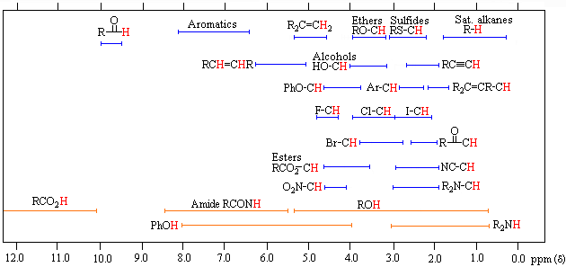
High FieldRegion
* For samples in CDCl3 solution. The δ scale is relative to TMS at δ = 0.
To make use of a calculator that predicts aliphatic proton chemical shifts Click Here. This application was developed at Colby College.
The magnitude or intensity of nmr resonance signals is displayed along the vertical axis of a spectrum, and is proportional to the molar concentration of the sample. Thus, a small or dilute sample will give a weak signal, and doubling or tripling the sample concentration increases the signal strength proportionally. If we take the nmr spectrum of equal molar amounts of benzene and cyclohexane in carbon tetrachloride solution, the resonance signal from cyclohexane will be twice as intense as that from benzene because cyclohexane has twice as many hydrogens per molecule. This is an important relationship when samples incorporating two or more different sets of hydrogen atoms are examined, since it allows the ratio of hydrogen atoms in each distinct set to be determined. To this end it is necessary to measure the relative strength as well as the chemical shift of the resonance signals that comprise an nmr spectrum. Two common methods of displaying the integrated intensities associated with a spectrum are illustrated by the following examples. In the three spectra in the top row, a horizontal integrator trace (light green) rises as it crosses each signal by a distance proportional to the signal strength. Alternatively, an arbitrary number, selected by the instrument's computer to reflect the signal strength, is printed below each resonance peak, as shown in the three spectra in the lower row. From the relative intensities shown here, together with the previously noted chemical shift correlations, the reader should be able to assign the signals in these spectra to the set of hydrogens that generates each. If you click on one of the spectrum signals (colored red) or on hydrogen atom(s) in the structural formulas the spectrum will be enlarged and the relationship will be colored blue. Hint: When evaluating relative signal strengths, it is useful to set the smallest integration to unity and convert the other values proportionally.
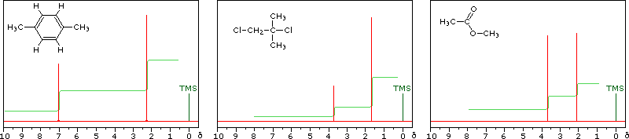
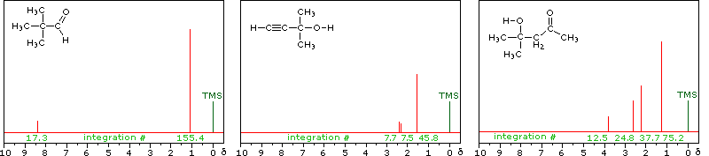
The last two compounds in the lower row are alcohols. The OH proton signal is seen at 2.37 δ in 2-methyl-3-butyne-2-ol, and at 3.87 δ in 4-hydroxy-4-methyl-2-pentanone, illustrating the wide range over which this chemical shift may be found. A six-membered ring intramolecular hydrogen bond in the latter compound is in part responsible for its low field shift, and will be shown by clicking on the hydroxyl proton. We can take advantage of rapid OH exchange with the deuterium of heavy water to assign hydroxyl proton resonance signals . As shown in the following equation, this removes the hydroxyl proton from the sample and its resonance signal in the nmr spectrum disappears. Experimentally, one simply adds a drop of heavy water to a chloroform-d solution of the compound and runs the spectrum again. The result of this exchange is displayed below.
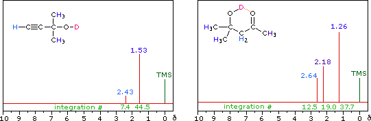
Hydrogen bonding shifts the resonance signal of a proton to lower field ( higher frequency ). Numerous experimental observations support this statement, and a few of these will be described here.
i) The chemical shift of the hydroxyl hydrogen of an alcohol varies with concentration. Very dilute solutions of 2-methyl-2-propanol, (CH3)3COH, in carbon tetrachloride solution display a hydroxyl resonance signal having a relatively high-field chemical shift (< 1.0 δ ). In concentrated solution this signal shifts to a lower field, usually near 2.5 δ.
ii) The more acidic hydroxyl group of phenol generates a lower-field resonance signal, which shows a similar concentration dependence to that of alcohols. OH resonance signals for different percent concentrations of phenol in chloroform-d are shown in the following diagram (C-H signals are not shown).
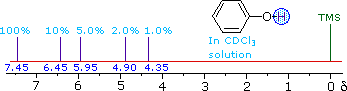
iii) Because of their favored hydrogen-bonded dimeric association, the hydroxyl proton of carboxylic acids displays a resonance signal significantly down-field of other functions. For a typical acid it appears from 10.0 to 13.0 δ and is often broader than other signals. The spectra shown below for chloroacetic acid (left) and 3,5-dimethylbenzoic acid (right) are examples.
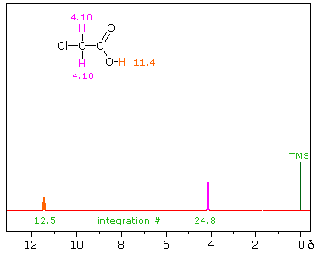
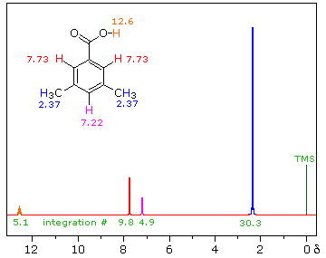
iv) Intramolecular hydrogen bonds, especially those defining a six-membered ring, generally display a very low-field proton resonance. The case of 4-hydroxypent-3-ene-2-one (the enol tautomer of 2,4-pentanedione) not only illustrates this characteristic, but also provides an instructive example of the sensitivity of the nmr experiment to dynamic change. In the nmr spectrum of the pure liquid, sharp signals from both the keto and enol tautomers are seen, their mole ratio being 4 : 21 (keto tautomer signals are colored purple). Chemical shift assignments for these signals are shown in the shaded box above the spectrum. The chemical shift of the hydrogen-bonded hydroxyl proton is δ 14.5, exceptionally downfield. We conclude, therefore, that the rate at which these tautomers interconvert is slow compared with the inherent time scale of nmr spectroscopy.
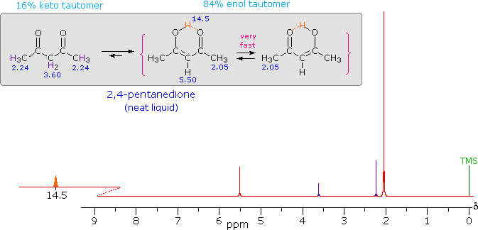
Two structurally equivalent structures may be drawn for the enol tautomer (in magenta brackets). If these enols were slow to interconvert, we would expect to see two methyl resonance signals associated with each, one from the allylic methyl and one from the methyl ketone. Since only one strong methyl signal is observed, we must conclude that the interconversion of the enols is very fast-so fast that the nmr experiment detects only a single time-averaged methyl group (50% α-keto and 50% allyl).
Although hydroxyl protons have been the focus of this discussion, it should be noted that corresponding N-H groups in amines and amides also exhibit hydrogen bonding nmr shifts, although to a lesser degree. Furthermore, OH and NH groups can undergo rapid proton exchange with each other; so if two or more such groups are present in a molecule, the nmr spectrum will show a single signal at an average chemical shift. For example, 2-hydroxy-2-methylpropanoic acid, (CH3)2C(OH)CO2H, displays a strong methyl signal at δ 1.5 and a 1/3 weaker and broader OH signal at δ 7.3 ppm. Note that the average of the expected carboxylic acid signal (ca. 12 ) and the alcohol signal (ca. 2 ) is 7. Rapid exchange of these hydrogens with heavy water, as noted above, would cause the low field signal to disappear.
For additional information about the influence of hydrogen bonding Click Here.
An examination of the proton chemical shift chart (above) makes it clear that the inductive effect of substituents cannot account for all the differences in proton signals. In particular the low field resonance of hydrogens bonded to double bond or aromatic ring carbons is puzzling, as is the very low field signal from aldehyde hydrogens. The hydrogen atom of a terminal alkyne, in contrast, appears at a relatively higher field. All these anomalous cases seem to involve hydrogens bonded to pi-electron systems, and an explanation may be found in the way these pi-electrons interact with the applied magnetic field. Pi-electrons are more polarizable than are sigma-bond electrons, as addition reactions of electrophilic reagents to alkenes testify. Therefore, we should not be surprised to find that field induced pi-electron movement produces strong secondary fields that perturb nearby nuclei. The pi-electrons associated with a benzene ring provide a striking example of this phenomenon, as shown below. The electron cloud above and below the plane of the ring circulates in reaction to the external field so as to generate an opposing field at the center of the ring and a supporting field at the edge of the ring. This kind of spatial variation is called anisotropy, and it is common to nonspherical distributions of electrons, as are found in all the functions mentioned above. Regions in which the induced field supports or adds to the external field are said to be deshielded, because a slightly weaker external field will bring about resonance for nuclei in such areas. However, regions in which the induced field opposes the external field are termed shielded because an increase in the applied field is needed for resonance. Shielded regions are designated by a plus sign, and deshielded regions by a negative sign. The anisotropy of some important unsaturated functions will be displayed by clicking on the benzene diagram below. Note that the anisotropy about the triple bond nicely accounts for the relatively high field chemical shift of ethynyl hydrogens. The shielding & deshielding regions about the carbonyl group have been described in two ways, which alternate in the display.
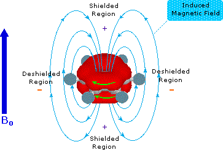
For additional examples of chemical shift variation near strongly anisotropic groups Click Here.
Sigma bonding electrons also have a less pronounced, but observable, anisotropic influence on nearby nuclei. This is seen in the small deshielding shift that occurs in the series CH3–R, R–CH2–R, R3CH; as well as the deshielding of equatorial versus axial protons on a fixed cyclohexane ring.
Chloroform-d (CDCl3) is the most common solvent for nmr measurements, thanks to its good solubilizing character and relative unreactive nature ( except for 1º and 2º-amines). As noted earlier, other deuterium labeled compounds, such as deuterium oxide (D2O), benzene-d6 (C6D6), acetone-d6 (CD3COCD3) and DMSO-d6 (CD3SOCD3) are also available for use as nmr solvents. Because some of these solvents have π-electron functions and/or may serve as hydrogen bonding partners, the chemical shifts of different groups of protons may change depending on the solvent being used. The following table gives a few examples, obtained with dilute solutions at 300 MHz.
For most of the above resonance signals and solvents the changes are minor, being on the order of ±0.1 ppm. However, two cases result in more extreme changes and these have provided useful applications in structure determination. First, spectra taken in benzene-d6 generally show small upfield shifts of most C–H signals, but in the case of acetone this shift is about five times larger than normal. Further study has shown that carbonyl groups form weak π–π collision complexes with benzene rings, that persist long enough to exert a significant shielding influence on nearby groups. In the case of substituted cyclohexanones, axial α-methyl groups are shifted upfield by 0.2 to 0.3 ppm; whereas equatorial methyls are slightly deshielded (shift downfield by about 0.05 ppm). These changes are all relative to the corresponding chloroform spectra. The second noteworthy change is seen in the spectrum of tert-butanol in DMSO, where the hydroxyl proton is shifted 2.5 ppm down-field from where it is found in dilute chloroform solution. This is due to strong hydrogen bonding of the alcohol O–H to the sulfoxide oxygen, which not only de-shields the hydroxyl proton, but secures it from very rapid exchange reactions that prevent the display of spin-spin splitting. Similar but weaker hydrogen bonds are formed to the carbonyl oxygen of acetone and the nitrogen of acetonitrile. A useful application of this phenomenon is described elsewhere in this text.
The nmr spectrum of 1,1-dichloroethane (below right) is more complicated than we might have expected from the previous examples. Unlike its 1,2-dichloro-isomer (below left), which displays a single resonance signal from the four structurally equivalent hydrogens, the two signals from the different hydrogens are split into close groupings of two or more resonances. This is a common feature in the spectra of compounds having different sets of hydrogen atoms bonded to adjacent carbon atoms. The signal splitting in proton spectra is usually small, ranging from fractions of a Hz to as much as 18 Hz, and is designated as J (referred to as the coupling constant). In the 1,1-dichloroethane example all the coupling constants are 6.0 Hz, as illustrated by clicking on the spectrum.
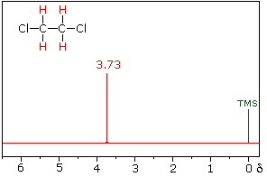
1,2-dichloroethane
1,1-dichloroethane
The splitting patterns found in various spectra are easily recognized, provided the chemical shifts of the different sets of hydrogen that generate the signals differ by two or more ppm. The patterns are symmetrically distributed on both sides of the proton chemical shift, and the central lines are always stronger than the outer lines. The most commonly observed patterns have been given descriptive names, such as doublet (two equal intensity signals), triplet (three signals with an intensity ratio of 1:2:1) and quartet (a set of four signals with intensities of 1:3:3:1). Four such patterns are displayed in the following illustration. The line separation is always constant within a given multiplet, and is called the coupling constant (J). The magnitude of J, usually given in units of Hz, is magnetic field independent.
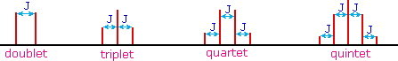
The splitting patterns shown above display the ideal or "First-Order" arrangement of lines. This is usually observed if the spin-coupled nuclei have very different chemical shifts (i.e. Δν is large compared to J). If the coupled nuclei have similar chemical shifts, the splitting patterns are distorted (second order behavior). In fact, signal splitting disappears if the chemical shifts are the same. Two examples that exhibit minor 2nd order distortion are shown below (both are taken at a frequency of 90 MHz). The ethyl acetate spectrum on the left displays the typical quartet and triplet of a substituted ethyl group. The spectrum of 1,3-dichloropropane on the right demonstrates that equivalent sets of hydrogens may combine their influence on a second, symmetrically located set. Even though the chemical shift difference between the A and B protons in the 1,3-dichloroethane spectrum is fairly large (140 Hz) compared with the coupling constant (6.2 Hz), some distortion of the splitting patterns is evident. The line intensities closest to the chemical shift of the coupled partner are enhanced. Thus the B set triplet lines closest to A are increased, and the A quintet lines nearest B are likewise stronger. A smaller distortion of this kind is visible for the A and C couplings in the ethyl acetate spectrum.
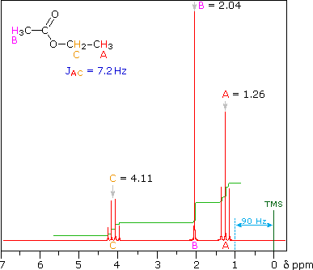
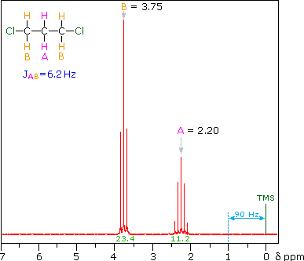
For additional examples of Second Order splitting patterns Click Here.
What causes this signal splitting, and what useful information can be obtained from it ? If an atom under examination is perturbed or influenced by a nearby nuclear spin (or set of spins), the observed nucleus responds to such influences, and its response is manifested in its resonance signal. This spin-coupling is transmitted through the connecting bonds, and it functions in both directions. Thus, when the perturbing nucleus becomes the observed nucleus, it also exhibits signal splitting with the same J. For spin-coupling to be observed, the sets of interacting nuclei must be bonded in relatively close proximity (e.g. vicinal and geminal locations), or be oriented in certain optimal and rigid configurations. Some spectroscopists place a number before the symbol J to designate the number of bonds linking the coupled nuclei (colored orange below). Using this terminology, a vicinal coupling constant is 3J and a geminal constant is 2J.
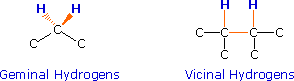
The following general rules summarize important requirements and characteristics for spin 1/2 nuclei :
1) Nuclei having the same chemical shift (called isochronous) do not exhibit spin-splitting. They may actually be spin-coupled, but the splitting cannot be observed directly. 2) Nuclei separated by three or fewer bonds (e.g. vicinal and geminal nuclei ) will usually be spin-coupled and will show mutual spin-splitting of the resonance signals (same J's), provided they have different chemical shifts. Longer-range coupling may be observed in molecules having rigid configurations of atoms. 3) The magnitude of the observed spin-splitting depends on many factors and is given by the coupling constant J (units of Hz). J is the same for both partners in a spin-splitting interaction and is independent of the external magnetic field strength. 4) The splitting pattern of a given nucleus (or set of equivalent nuclei) can be predicted by the n+1 rule, where n is the number of neighboring spin-coupled nuclei with the same (or very similar) Js. If there are 2 neighboring, spin-coupled, nuclei the observed signal is a triplet ( 2+1=3 ); if there are three spin-coupled neighbors the signal is a quartet ( 3+1=4 ). In all cases the central line(s) of the splitting pattern are stronger than those on the periphery. The intensity ratio of these lines is given by the numbers in Pascal's triangle. Thus a doublet has 1:1 or equal intensities, a triplet has an intensity ratio of 1:2:1, a quartet 1:3:3:1 etc. To see how the numbers in Pascal's triangle are related to the Fibonacci series click on the diagram.
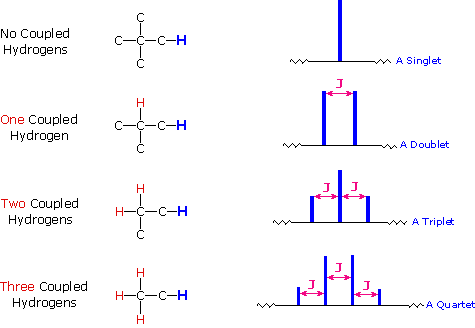
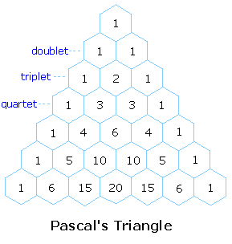
If a given nucleus is spin-coupled to two or more sets of neighboring nuclei by different J values, the n+1 rule does not predict the entire splitting pattern. Instead, the splitting due to one J set is added to that expected from the other J sets. Bear in mind that there may be fortuitous coincidence of some lines if a smaller J is a factor of a larger J.
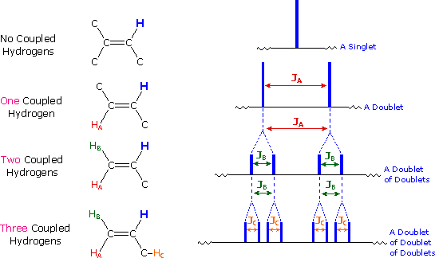
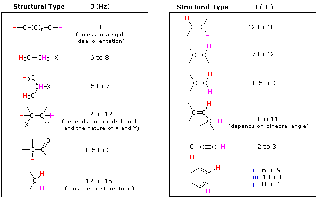
Spin 1/2 nuclei include 1H, 13C, 19F & 31P. The spin-coupling interactions described above may occur between similar or dissimilar nuclei. If, for example, a 19F is spin-coupled to a 1H, both nuclei will appear as doublets having the same J constant. Spin coupling with nuclei having spin other than 1/2 is more complex and will not be discussed here.
To make use of a calculator that predicts first order splitting patterns Click Here. This application was developed at Colby College.
For additional information about spin-spin coupling Click Here.
Test your ability to interpret 1H nmr spectra by analyzing the seven examples presented below. The seven spectra may be examined in turn by clicking the "Toggle Spectra" button. Try to associate each spectrum with a plausible structural formula. Although the first four cases are relatively simple, keep in mind that the integration values provide ratios, not absolute numbers. In two cases additional information from infrared spectroscopy is provided. When you have made an assignment you may check your answer by clicking on the spectrum itself. In the sixth example, a similar constitutional isomer cannot be ruled out by the data given.
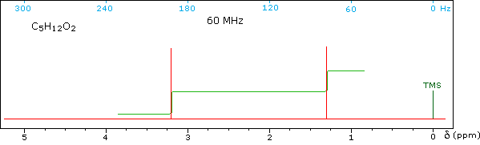
For a challenging problem having many spin couplings Click Here.
3. Carbon NMR Spectroscopy The power and usefulness of 1H nmr spectroscopy as a tool for structural analysis should be evident from the past discussion. Unfortunately, when significant portions of a molecule lack C-H bonds, no information is forthcoming. Examples include polychlorinated compounds such as chlordane, polycarbonyl compounds such as croconic acid, and compounds incorporating triple bonds (structures below, orange colored carbons).
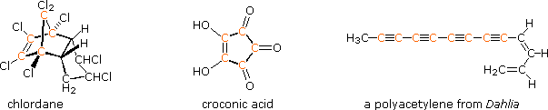
Even when numerous C-H groups are present, an unambiguous interpretation of a proton nmr spectrum may not be possible. The following diagram depicts three pairs of isomers (A & B) which display similar proton nmr spectra. Although a careful determination of chemical shifts should permit the first pair of compounds (blue box) to be distinguished, the second and third cases (red & green boxes) might be difficult to identify by proton nmr alone.
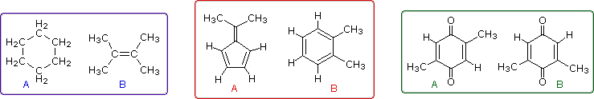
These difficulties would be largely resolved if the carbon atoms of a molecule could be probed by nmr in the same fashion as the hydrogen atoms. Since the major isotope of carbon (12C) has no spin, this option seems unrealistic. Fortunately, 1.1% of elemental carbon is the 13C isotope, which has a spin I = 1/2, so in principle it should be possible to conduct a carbon nmr experiment. It is worth noting here, that if much higher abundances of 13C were naturally present in all carbon compounds, proton nmr would become much more complicated due to large one-bond coupling of 13C and 1H.
Many obstacles needed to be overcome before carbon nmr emerged as a routine tool : i) As noted, the abundance of 13C in a sample is very low (1.1%), so higher sample concentrations are needed. ii) The 13C nucleus is over fifty times less sensitive than a proton in the nmr experiment, adding to the previous difficulty. iii) Hydrogen atoms bonded to a 13C atom split its nmr signal by 130 to 270 Hz, further complicating the nmr spectrum.
The most important operational technique that has led to successful and routine 13C nmr spectroscopy is the use of high-field pulse technology coupled with broad-band heteronuclear decoupling of all protons. The results of repeated pulse sequences are accumulated to provide improved signal strength. Also, for reasons that go beyond the present treatment, the decoupling irradiation enhances the sensitivity of carbon nuclei bonded to hydrogen. When acquired in this manner, the carbon nmr spectrum of a compound displays a single sharp signal for each structurally distinct carbon atom in a molecule (remember, the proton couplings have been removed). The spectrum of camphor, shown on the left below, is typical. Furthermore, a comparison with the 1H nmr spectrum on the right illustrates some of the advantageous characteristics of carbon nmr. The dispersion of 13C chemical shifts is nearly twenty times greater than that for protons, and this together with the lack of signal splitting makes it more likely that every structurally distinct carbon atom will produce a separate signal. The only clearly identifiable signals in the proton spectrum are those from the methyl groups. The remaining protons have resonance signals between 1.0 and 2.8 ppm from TMS, and they overlap badly thanks to spin-spin splitting.
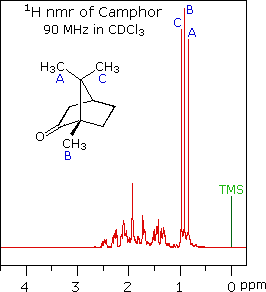
Unlike proton nmr spectroscopy, the relative strength of carbon nmr signals are not normally proportional to the number of atoms generating each one. Because of this, the number of discrete signals and their chemical shifts are the most important pieces of evidence delivered by a carbon spectrum. The general distribution of carbon chemical shifts associated with different functional groups is summarized in the following chart. Bear in mind that these ranges are approximate, and may not encompass all compounds of a given class. Note also that the over 200 ppm range of chemical shifts shown here is much greater than that observed for proton chemical shifts.
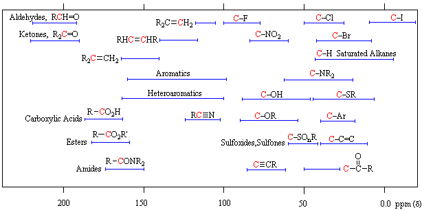
The isomeric pairs previously cited as giving very similar proton nmr spectra are now seen to be distinguished by carbon nmr. In the example on the left below (blue box), cyclohexane and 2,3-dimethyl-2-butene both give a single sharp resonance signal in the proton nmr spectrum (the former at δ 1.43 ppm and the latter at 1.64 ppm). However, in its carbon nmr spectrum cyclohexane displays a single signal at δ 27.1 ppm, generated by the equivalent ring carbon atoms (colored blue); whereas the isomeric alkene shows two signals, one at δ 20.4 ppm from the methyl carbons (colored brown), and the other at 123.5 ppm (typical of the green colored sp2 hybrid carbon atoms).
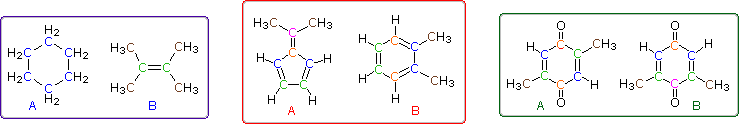
The C8H10 isomers in the center (red) box have pairs of homotopic carbons and hydrogens, so symmetry should simplify their nmr spectra. The fulvene (isomer A) has five structurally different groups of carbon atoms (colored brown, magenta, orange, blue and green respectively) and should display five 13C nmr signals (one near 20 ppm and the other four greater than 100 ppm). Although ortho-xylene (isomer B) will have a proton nmr very similar to isomer A, it should only display four 13C nmr signals, originating from the four different groups of carbon atoms (colored brown, blue, orange and green). The methyl carbon signal will appear at high field (near 20 ppm), and the aromatic ring carbons will all give signals having δ > 100 ppm. Finally, the last isomeric pair, quinones A & B in the green box, are easily distinguished by carbon nmr. Isomer A displays only four carbon nmr signals (δ 15.4, 133.4, 145.8 & 187.9 ppm); whereas, isomer B displays five signals (δ 15.9, 133.3, 145.8, 187.5 & 188.1 ppm), the additional signal coming from the non-identity of the two carbonyl carbon atoms (one colored orange and the other magenta).
Variations of the 13C nmr procedure described here can provide additional structural information.Click Here for an example.
The following problems focus on concepts and facts associated with nmr spectroscopy. The first two questions ask you to identify structurally equivalent groups of hydrogen and carbon atoms. The third question concerns both 1H & 13C nmr, and the fourth examines spin-splitting in proton nmr. The fifth & sixth questions require interpretation of a proton nmr spectrum. Questions 7, 8 & 9 present an assortment of unknowns for which a variety of spectroscopic data is given. Question 10 combines chemical and spectroscopic evidence for an unknown compound.
Return to Table of Contents
This page is the property of The Edvibe Team. Comments, questions and errors should be sent to contact@edvibe.co.ke. These pages are provided to the IOCD to assist in capacity building in chemical education. 05/05/2013